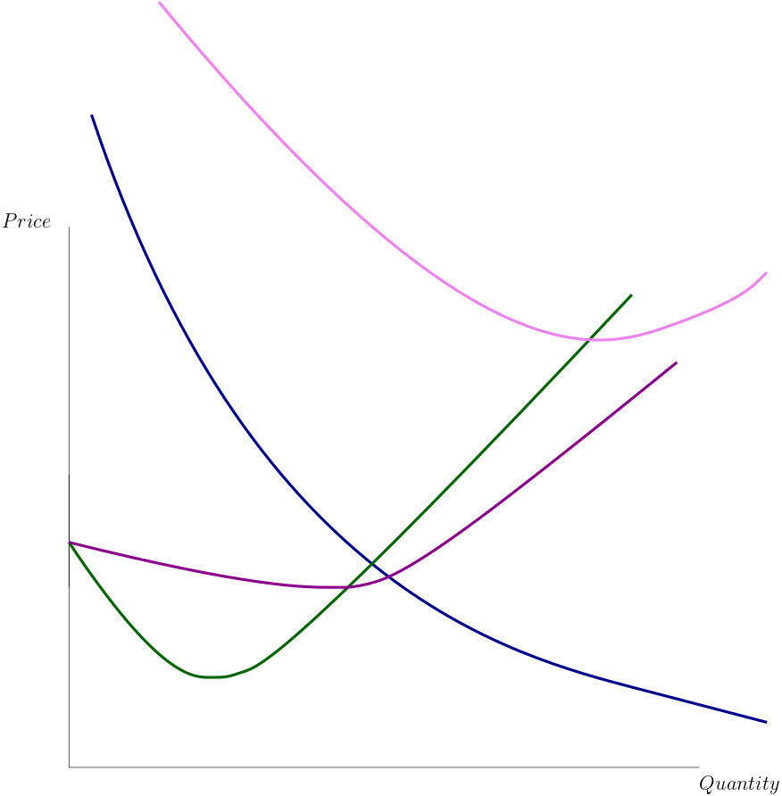

ECON 101, Fall 2020
The city of Braavos is known for its purple dye, a substance extracted from a special kind of snails native to its lagoons. Hugo is operating a dye shop in the lower part of the city. To make the purple dye, Hugo purchases snails, crushes them, and filters out the shells with a fine mesh. Afterwards, he mixes the crushed snails with limestone and wheat powder, and lets it ferment in a cauldron for a week. In addition to himself, he also has his 2 sons (Yollo and Griff) to help with the process. The Iron Bank of Braavos has an outstanding offer to buy Hugo’s shop should he wish to sell it. The various equipment he uses has been passed down in the family, along with the secret of dye making.
In the above story, what would constitute the fixed cost of dye production for Hugo? How about the variable cost? What makes up the marginal cost? Is there any sunk cost?
Suppose that the shop is worth 1500, and the various equipment is worth 500. Further suppose it takes 3 pounds of snails, 1 pound of limestone powder, 2 pounds of wheat powder, and approximately 10 hours worth of human labour to produce 1 pound of dye. Each pound of snail costs 2 coins, each pound of limestone powder costs 2 coins, and each pound of wheat powder costs 6 coins. Wages in Braavos for an average dye worker is 0.5 coins per hour. What is the marginal cost of one pound of dye?
What is the variable cost? What is the total cost? What is the average total cost and average variable cost?
Now suppose a war erupts, severely disrupting the trade and leading to a shortage in wheat. As a result, the marginal cost of purchasing the \(Q^{th}\) unit of wheat is now 6Q. What is the new marginal cost? What is the new VC and TC? How about ATC and AVC?
Label these curves:
